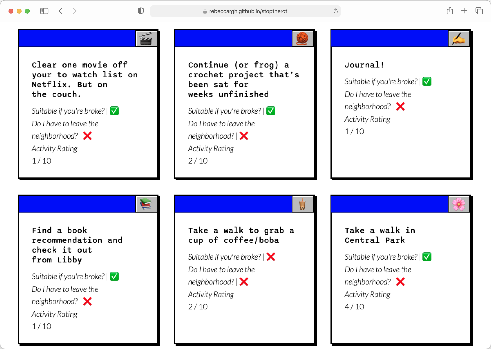

Stop The Rot
Scope: Personal web design & development project
Time: March - May 2024
Stop the Rot is a project born to solve the problem of spending 1 too many weekends wasting away in my apartment. Having lived in NYC for 5 years now, it is easy to take the city for granted and STR aims to provide activities that meet me where I'm at based on energy/commitment levels. Built over the course of 2 months as part of my Masters program, STR is the culmination of 2 semesters of HTML, CSS & Javascript learnings.